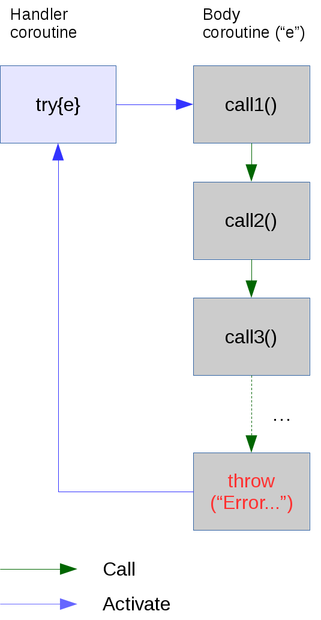

Icon traditionally uses failure to indicate some exceptional (but non-fatal) situation; for example the open() call fails if a file cannot be opened.
This method of communicating an error condition works well most of the time, but it does have a couple of limitations. Firstly, it may be that the procedure concerned may wish to fail for other reasons; for example it may generate a results sequence, which could be empty. Secondly, propagating errors up through the call chain can become tedious and error-prone. Consider a recursive descent parser for example. At the lowest level of call a syntax error might be detected, and so every procedure invocation at a higher level must have “| fail” appended to it. Should this be accidentally missed out on a call, the results can be unfortunate.
A solution to these problems is provided by a simple exception library, contained in the exception package.
try and throwtry and throw are the two basic procedures provided by the package. Here is an example illustrating their use :-
import io, lang, exception
procedure call3()
throw("Error happened")
end
procedure call2()
call3()
end
procedure call1()
call2()
end
procedure main()
try {
call1()
}
if \thrown then {
write("Caught: ", image(thrown))
Coexpression.traceback(thrower)
eclear()
}
end
which outputs :-
Caught: "Error happened"
Traceback:
co-expression#2 activated by co-expression#1
main()
call1() from line 17 in exception.icn
call2() from line 12 in exception.icn
call3() from line 8 in exception.icn
exception.throw("Error happened") from line 4 in exception.icn
at line 50 in exception.icntry works by taking a single co-expression parameter. This is the “body” of the try; in the above example the body just invokes call1(). Before invoking the body, it sets a global variable, throw_handler to ¤t; this is the co-expression to activate when an exception occurs.
So all throw does is to activate the handler, after setting two other global variables
thrown which indicate the thing being thrown (usually a string), andthrower, which gives the co-expression doing the throw.Here is a diagram illustrating the above :-

All the caller of try has to do is check whether thrown (or thrower) have been set. If so, an exception was thrown. After handling it, exception.eclear should be called to reset the global variables to &null.
trystry calls can be nested. The throw_handler global variable is saved and restored by try, so that each call effectively sees its own copy. The util.save_state procedure is used, together a util.State subclass, exception.ThrowHandlerState, as described on this page.
try1try1 is a convenient wrapper around try. try1 will succeed with the first value generated by the body expression, or &null if that expression fails. If an exception was thrown, it fails and sets &why appropriately, and also calls eclear(). So we could have written our example above slighly more concisely as follows :-
procedure main()
try1 {
call1()
} | write("Caught: ", &why)
endalthough we no longer have the thrower co-expression available, since try1 calls eclear().
One potential problem with exceptions is that they may bypass cleanup code, such as closing open files. Languages like java handle this by using a try ... finally structure.
A somewhat similar effect can be achieved using two library procedures found in the util package, util.use and util.clean.
use takes three co-expressions: a setup expression which opens a particular resource (such as a file); an action expression which uses that resource, and finally a cleanup expression which closes the resource. Normally use invokes the cleanup expression itself, after the action expression completes. But if the action expression never does this, as may happen if we throw an exception, then we can use clean. This works in conjunction with use, by managing a global list of cleanup expressions. use adds each cleanup expression to the list, and removes them if and when they are run. Finally, clean will run any cleanup expressions that use hasn’t.
Therefore to clean up any resources which may be left open by a thrown exception, we just need to
try (or try1) call in a clean call, anduseA good example of the use of use and clean can be found on this page.